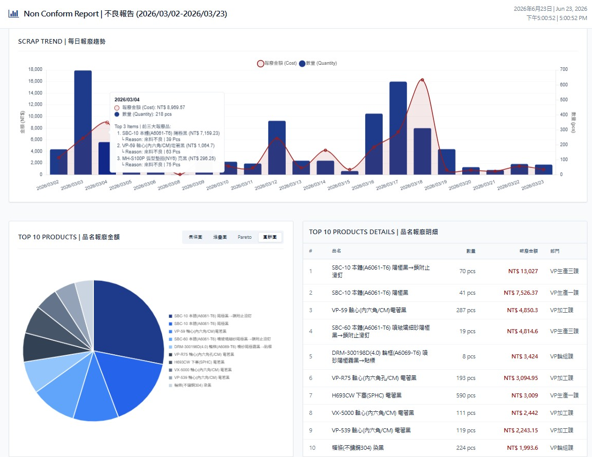
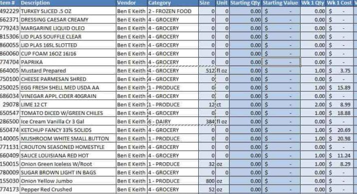

Flagship build
Non-conformance reporting, on autopilot
Every week, scrap data from across the plant had to be pulled from the T100 ERP and shaped by hand — about two hours of copy-paste before anyone could read a trend. I built a single-page app that does it in one import.
Before
2 hrs
Manual copy-paste
96% less time
After
<5 min
One Excel import
How it works
Drop in the weekly Excel export; the app parses it with SheetJS, then renders daily scrap trends and Top-10 breakdowns by product, department, and defect reason with Chart.js.
On the dashboard
- Daily scrap trend, by cost and quantity
- Top-10 products by scrap value
- Breakdown by department
- Breakdown by defect reason
- Four summary KPIs at a glance
- Switchable language and filters


Outreach
OCAC education promotion
A picture-led slideshow promoting overseas-community education programs for the OCAC. It walks an audience through study pathways and cultural resources at a glance — built to read clearly on screen and present easily in person.
Experiment
Music, made with Suno
An experiment in generating original tracks with Suno AI. Here's one, previewed straight from YouTube.